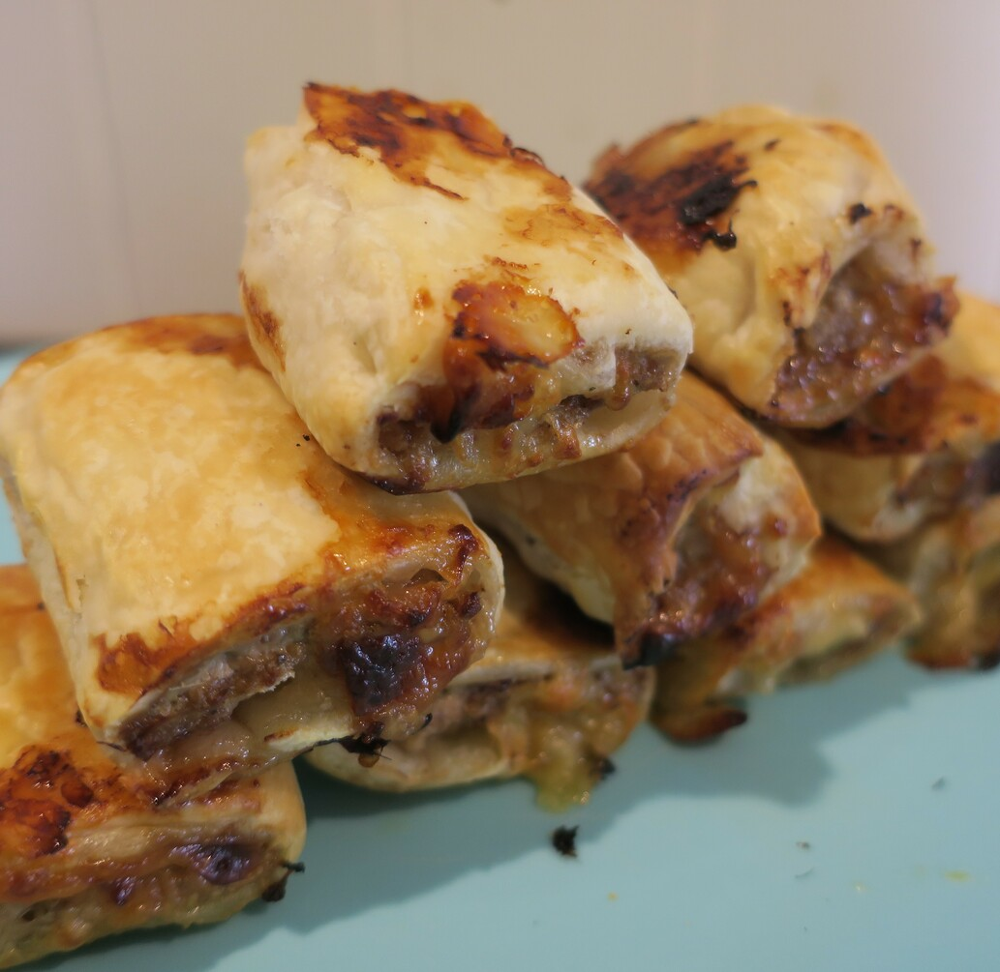

Sausage Rolls
 Meat
Meat

Preheat oven to 180 degrees
2 slicestoast
Blend toast
500glamb mince1egg
Using hands mix lamb mince, egg and breads together
Add seasoning
3 sheetspastry
Halve sheets of pastry
Place mince on pastry sheet, roll into log and cut.
somemilk
Brush pastry with milk
Cook in oven for 25-30 mins, turning half way through